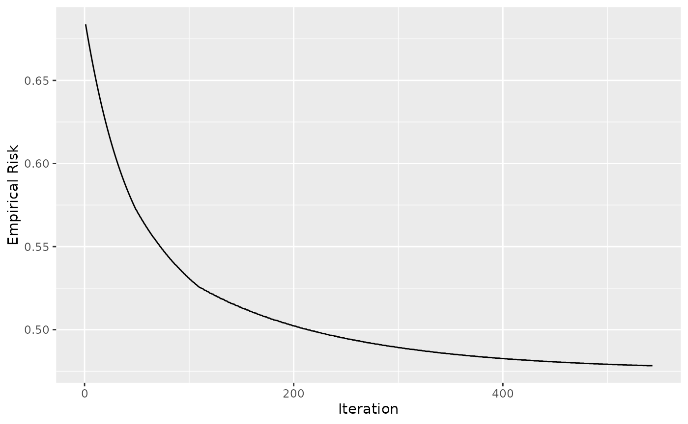
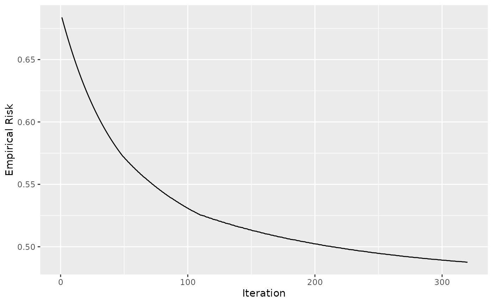

Early Stopping
early_stopping.RmdBefore Starting
- Read the use-case to get to know how to define a
Compboostobject using theR6interface
Data: Titanic Passenger Survival Data Set
We use the titanic dataset with binary classification on Survived. First of all we store the train and test data into two data frames and remove all rows that contains missing values (NAs):
# Store train and test data:
df = na.omit(titanic::titanic_train)
df$Survived = factor(df$Survived, labels = c("no", "yes"))For the later stopping we split the dataset into train and test:
Defining the Model
We define the same model as in the use-case but just on the train index without specifying an out of bag fraction:
cboost = Compboost$new(data = df[idx_train, ], target = "Survived", loss = LossBinomial$new())
cboost$addBaselearner("Age", "spline", BaselearnerPSpline)
cboost$addBaselearner("Fare", "spline", BaselearnerPSpline)
cboost$addBaselearner("Sex", "ridge", BaselearnerCategoricalRidge)Early Stopping in Compboost
How does it work?
The early stopping of compboost is done by using the logger objects. The logger is executed after each iteration and stores class dependent data, e.g. the runtime. Additionally, each logger can be declared as a stopper with use_as_stopper = TRUE. Declaring a logger as stopper, the logged data is used to stop the algorithm after a logger-specific criteria is reached. For example, using LoggerTime as stopper will break the algorithm algorithm after a pre-defined runtime is reached.
Example with runtime stopping
Now it is time to define a logger to track the runtime. As mentioned above, we set use_as_stopper = TRUE. Now it matters what is specified in max_time since this defines how long we like to train the model. Here we want to stop after 50000 microseconds:
cboost$addLogger(logger = LoggerTime, use_as_stopper = TRUE, logger_id = "time",
max_time = 50000, time_unit = "microseconds")
cboost$train(2000, trace = 100)
#> 1/2000 risk = 0.66 time = 0
#> 100/2000 risk = 0.5 time = 10465
#> 200/2000 risk = 0.51 time = 21160
#> 300/2000 risk = 0.52 time = 33663
#> 400/2000 risk = 0.53 time = 45018
#>
#>
#> Train 438 iterations in 0 Seconds.
#> Final risk based on the train set: 0.53
cboost
#>
#> LossBinomial Loss:
#>
#> Loss function: L(y,x) = log(1 + exp(-2yf(x))
#>
#> As we can see, the fittings is stopped after 438 and not after 2000 iterations as specified in train. Taking a look at the logger data, we can see that the last entry exceeds the 50000 microseconds and therefore triggers the stopping criteria:
tail(cboost$getLoggerData())
#> _iterations time baselearner train_risk
#> 434 433 49452 Age_spline 0.5299501
#> 435 434 49564 Fare_spline 0.5299881
#> 436 435 49706 Sex_ridge 0.5303033
#> 437 436 49844 Age_spline 0.5302845
#> 438 437 49982 Age_spline 0.5302656
#> 439 438 50129 Age_spline 0.5302469Loss-Based Early Stopping
In machine learning we often like to stop when the best model performance is reached. Especially in boosting, which may tend to overfit, we need either tuning or early stopping to determine what is a good number of iterations \(m\) to get a good model performance. A well-known procedure is to log the out of bag (oob) behavior of the model and stop after this starts to get worse. This is how the oob early stopping is implemented in compboost. The parameter we need to specify are
the loss \(L\) that is used for stopping: \[\mathcal{R}_{\text{emp}}^{[m]} = \frac{1}{n}\sum_{i=1}^n L\left(y^{(i)}, f^{[m]}(x^{(i)})\right)\]
the percentage of performance increase that should be undershot: \[\text{err}^{[m]} = \frac{\mathcal{R}_{\text{emp}}^{[m- 1]} - \mathcal{R}_{\text{emp}}^{[m]}}{\mathcal{R}_{\text{emp}}^{[m - 1]}}\]
Define the risk logger
Since we are interested in the oob behavior it is necessary to define the oob data and response in a manner that compboost understands it. Therefore, it is possible to use the $prepareResponse() and $prepareData() member functions to create suitable objects:
oob_response = cboost$prepareResponse(df$Survived[idx_test])
oob_data = cboost$prepareData(df[idx_test,])With these objects we can add the oob risk logger, declare it as stopper, and train the model:
cboost$addLogger(logger = LoggerOobRisk, use_as_stopper = TRUE, logger_id = "oob",
used_loss = LossBinomial$new(), eps_for_break = 0, patience = 5, oob_data = oob_data,
oob_response = oob_response)
cboost$train(2000, trace = 100)
#> 1/2000 risk = 0.66 oob = 0.67
#> 100/2000 risk = 0.5 oob = 0.47
#>
#>
#> Train 125 iterations in 0 Seconds.
#> Final risk based on the train set: 0.5Note: The use of eps_for_break = 0 is a hard constrain to continue the training just until the oob risk starts to increase.
Taking a look at the logger data tells us that we stop exactly after the first five differences are bigger than zero (the oob risk of these iterations are bigger than the previous ones):
tail(cboost$getLoggerData(), n = 10)
#> _iterations oob baselearner train_risk
#> 117 116 0.4708294 Sex_ridge 0.5027095
#> 118 117 0.4708469 Fare_spline 0.5026381
#> 119 118 0.4708365 Age_spline 0.5022909
#> 120 119 0.4710961 Sex_ridge 0.5030829
#> 121 120 0.4710920 Age_spline 0.5027519
#> 122 121 0.4711234 Fare_spline 0.5026907
#> 123 122 0.4711277 Age_spline 0.5023771
#> 124 123 0.4711744 Fare_spline 0.5023290
#> 125 124 0.4714304 Sex_ridge 0.5031084
#> 126 125 0.4714378 Age_spline 0.5028085
diff(tail(cboost$getLoggerData()$oob, n = 10))
#> [1] 1.751405e-05 -1.043817e-05 2.596370e-04 -4.076452e-06 3.136728e-05
#> [6] 4.324726e-06 4.669298e-05 2.559763e-04 7.429030e-06
library(ggplot2)
ggplot(data = cboost$getLoggerData(), aes(x = `_iterations`, y = oob)) +
geom_line() +
xlab("Iteration") +
ylab("Empirical Risk")
#> Warning: Removed 1 row(s) containing missing values (geom_path).
Taking a look at 2000 iterations shows that we have stopped quite good:
cboost$train(2000, trace = 0)
#>
#> You have already trained 125 iterations.
#> Train 1875 additional iterations.
ggplot(data = cboost$getLoggerData(), aes(x = `_iterations`, y = oob)) +
geom_line() +
xlab("Iteration") +
ylab("Empirical Risk")
#> Warning: Removed 1 row(s) containing missing values (geom_path).
Note: It could happen that the model’s oob behavior increases locally for a few iterations and then starts to decrease again. To capture this we need the “patience” parameter which waits for, lets say, 5 iterations and breaks just if all 5 iterations fulfill the criteria. Setting this parameter to one can lead to very unstable results:
df = na.omit(titanic::titanic_train)
df$Survived = factor(df$Survived, labels = c("no", "yes"))
set.seed(123)
idx_train = sample(seq_len(nrow(df)), size = nrow(df) * 0.8)
idx_test = setdiff(seq_len(nrow(df)), idx_train)
cboost = Compboost$new(data = df[idx_train, ], target = "Survived", loss = LossBinomial$new())
cboost$addBaselearner("Age", "spline", BaselearnerPSpline)
cboost$addBaselearner("Fare", "spline", BaselearnerPSpline)
cboost$addBaselearner("Sex", "ridge", BaselearnerCategoricalRidge)
oob_response = cboost$prepareResponse(df$Survived[idx_test])
oob_data = cboost$prepareData(df[idx_test,])
cboost$addLogger(logger = LoggerOobRisk, use_as_stopper = TRUE, logger_id = "oob",
used_loss = LossBinomial$new(), eps_for_break = 0, patience = 1, oob_data = oob_data,
oob_response = oob_response)
cboost$train(2000, trace = 0)
#> Train 65 iterations in 0 Seconds.
#> Final risk based on the train set: 0.51
library(ggplot2)
ggplot(data = cboost$getLoggerData(), aes(x = `_iterations`, y = oob)) +
geom_line() +
xlab("Iteration") +
ylab("Empirical Risk")
#> Warning: Removed 1 row(s) containing missing values (geom_path).
Some remarks
- Early stopping can be done globally or locally:
- locally: The algorithm stops after the first stopping criteria of any logger is reached
- globally: The algorithm stops after all stopping criteria are reached
- Some arguments are ignored when the logger is not set as stopper, e.g.
max_timefrom the time logger - The logger functionality is summarized here